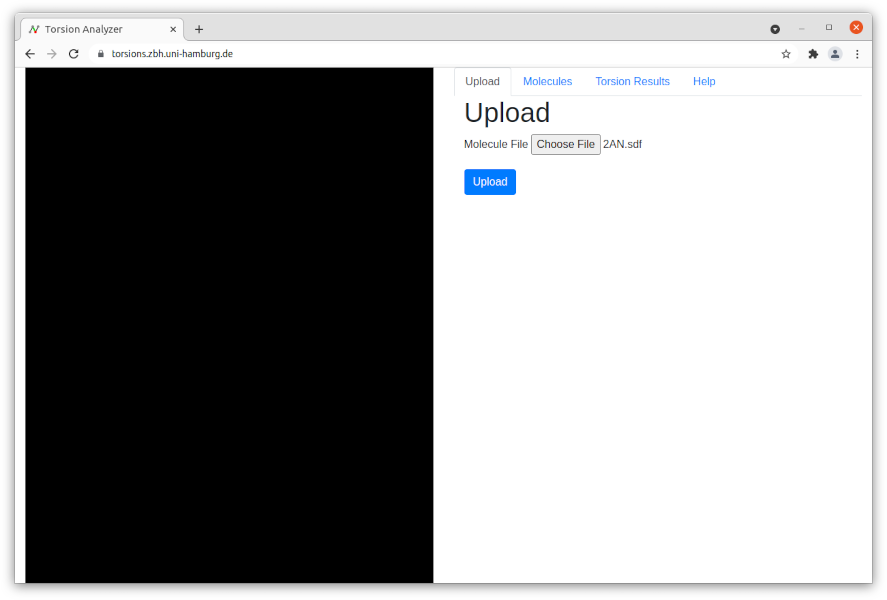

The left-hand side of the application is the molecule viewer. The right-hand side is a tab pane with various tabs that are explained below. These can be clicked on to switch from one tab to another.
Upload a molecule file to the server using the file field. Only one file can be uploaded at once. The file can only be an SDF and less than 10MB in size. The SDF may contain multiple molecules. All rotatable bonds of all molecules will be classified.
If a file contains multiple molecules these will be shown as different entries in the molecules table. These can be clicked to change the shown molecule/conformation. The names of the molecules are taken from the SDF. The quality annotation of each molecule shows the worst quality of any rotatable bond in that particular molecule. Clicking the header of the molecule table will sort by the clicked property (Entry, Name or Quality). The search field can be used to filter the table by matching strings. The "Download TSV File" button will download the raw output from the TorsionAnalyzer.
Every rotatable bond is listed as one torsion result in the torsion results table ta the lower right of the "Torsion Results" tab. Clicking on either a row in the table or a rotatable bond in the viewer will mark the row in the table and mark the bond in viewer. A plot of the torsion angle distribution for the torsion rule the current rotatable bond has matched can be seen in the top right. It can be switched to either a distribution of CSD or PDB data. Below this plot is a full list of the torsion results for the current molecule. Each row contains the measured dihedral angle, the quality according to its likelihood in the CSD and the SMARTS pattern of the torsion rule that was matched. The SMARTS can be easily copied using the copy button and, for example, visualized using the smarts.plus website. Clicking the header of the torsion results table will sort by the clicked property (Entry, Name or Quality). The search field can be used to filter the table by matching strings.